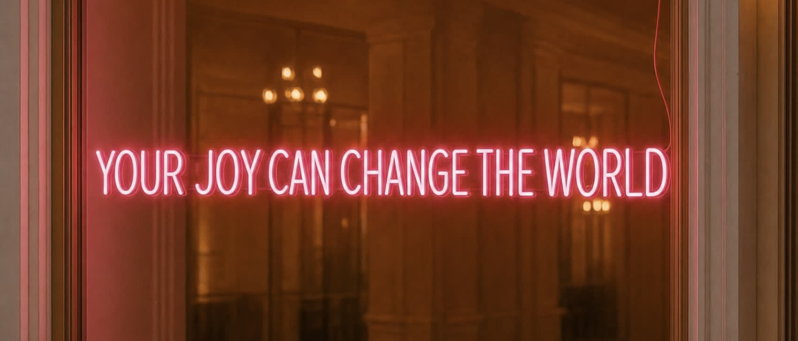
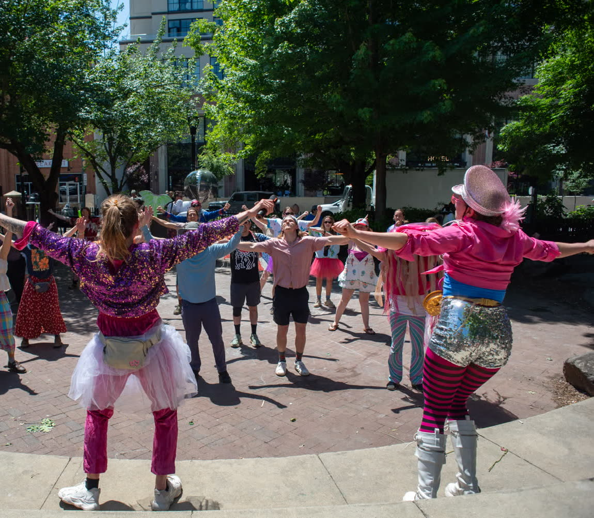
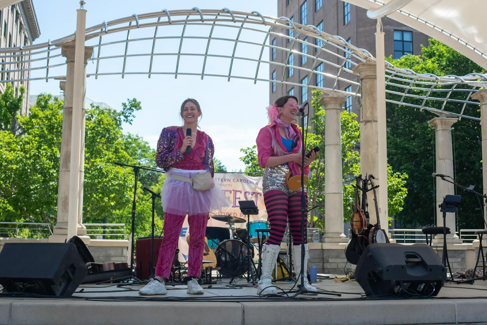
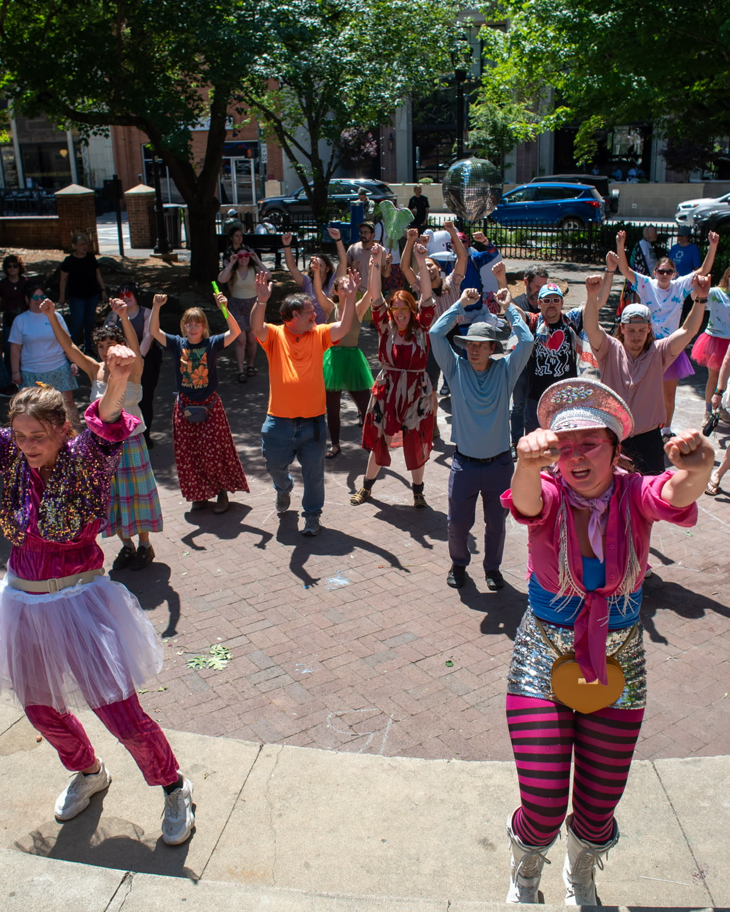
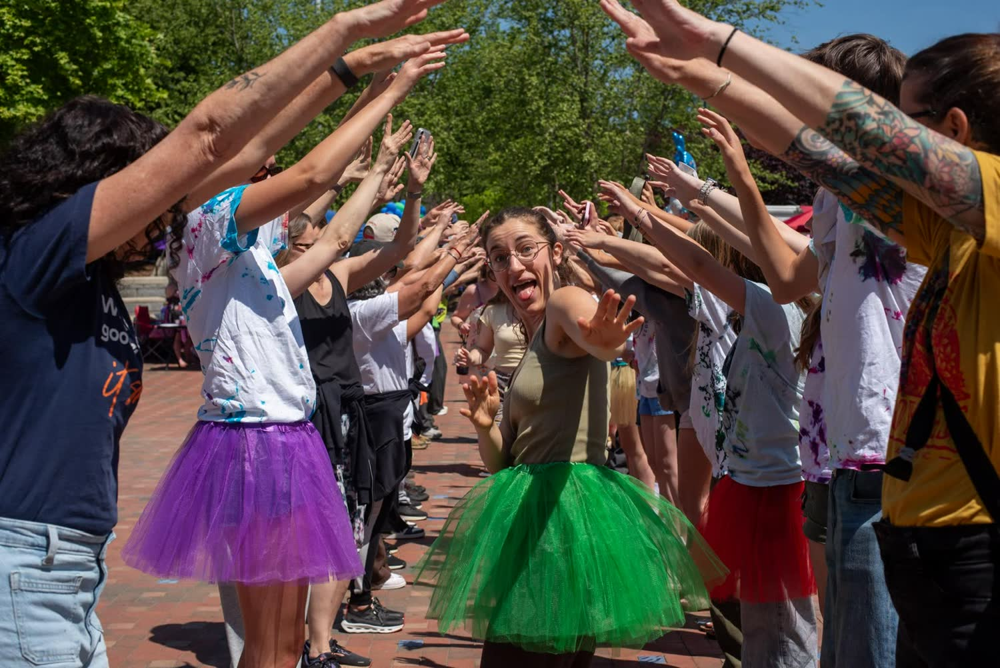
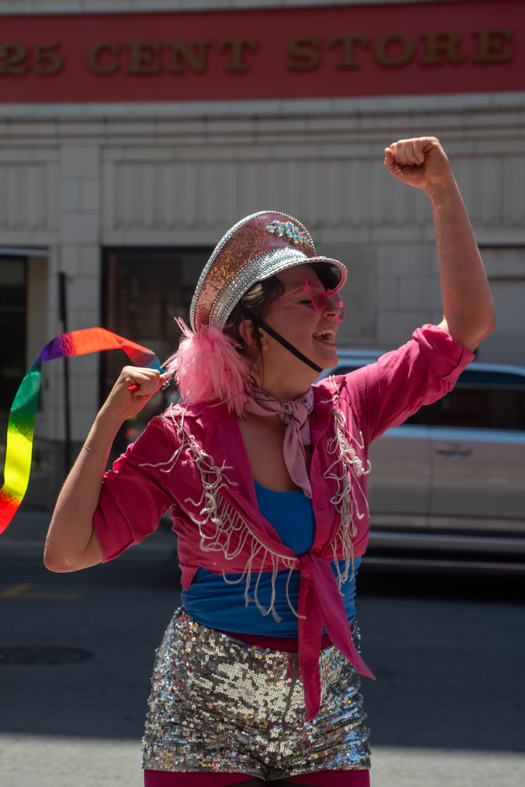
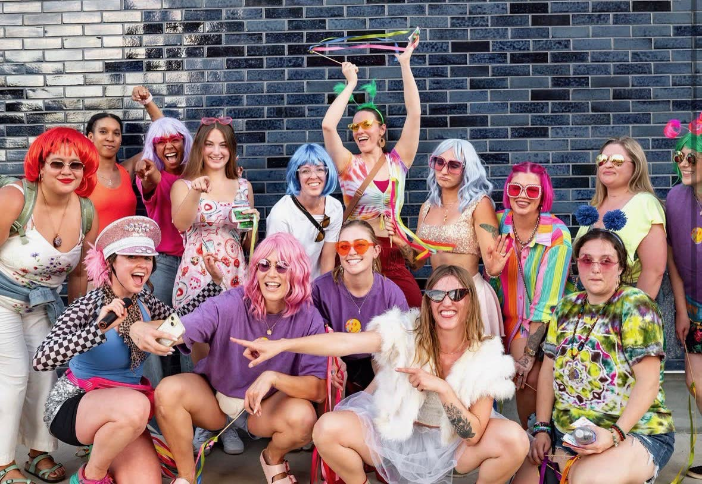
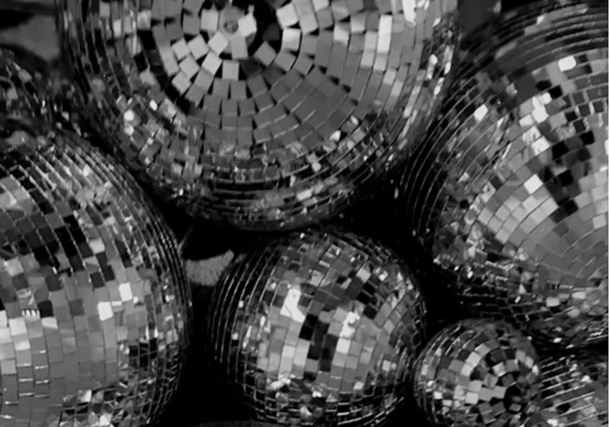
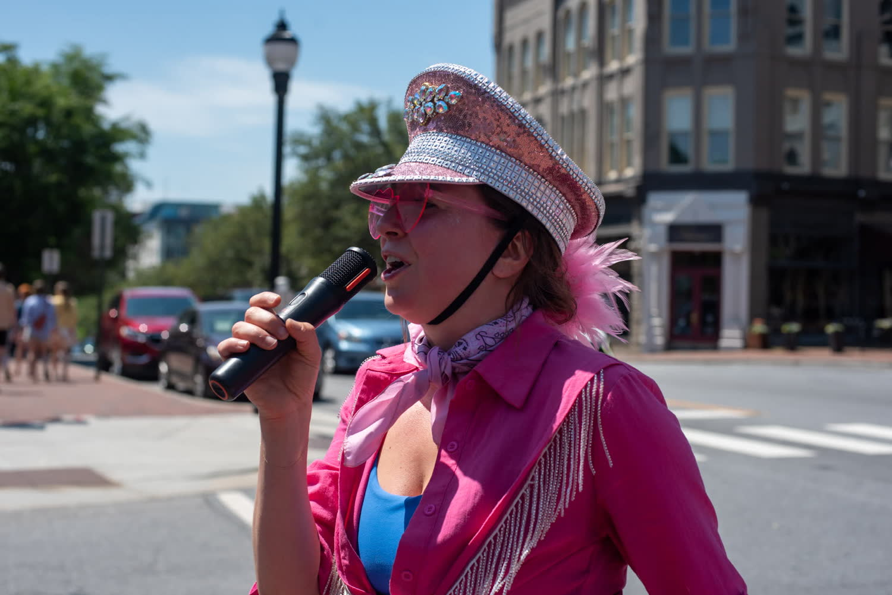
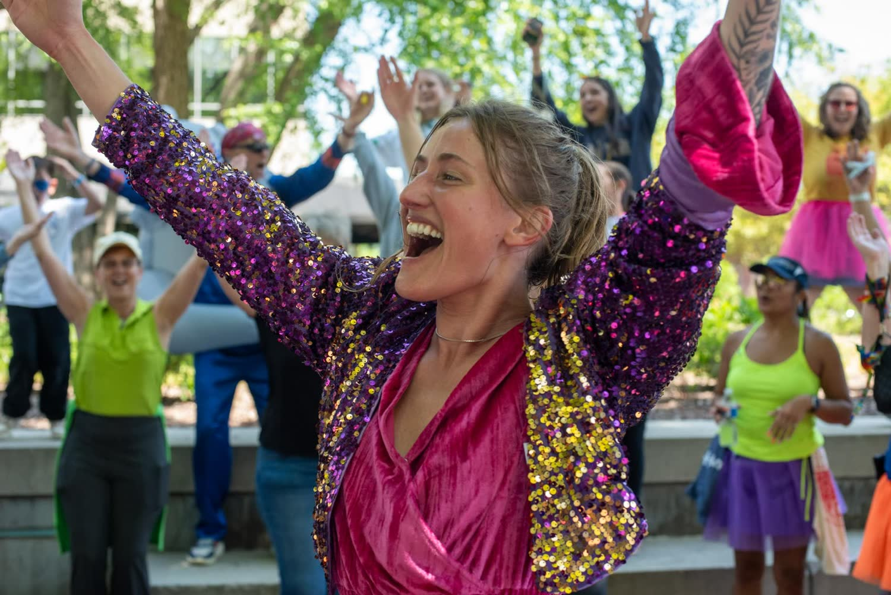

You are not booking entertainment. You are booking the state your audience is in when your next speaker walks on. Give us the opener, the post-lunch slump, or the slot before your big ask. Your room arrives warm, focused, and open to whatever comes next.

Joy Parade is a social experiment crafted to change how people feel and how long they remember it: a curated, group-led experience anyone can join without thinking twice. The moment they do, they move past their limitations, creating new behaviors, new thinking, and a room that is open to what comes next.
Designed to amplify your event, whether that is a room of twenty or a crowd of twenty thousand, a packed street or a festival field. We shape it around your crowd and the intention behind your event, so people leave with a deeper connection to why they came. No experience needed, and nothing for your team to run.
We can all admit that when one person goes first, it is so much easier to jump in. That one person creates a ripple, and the ripple is what you are booking. Every room you fill is full of people waiting for permission to enjoy themselves.


Attention is not a mood. It is a physical state.
Move a room and the focus follows. In a controlled study of classroom "energizer" breaks, a short burst of structured movement lifted on-task behavior by 8% overall. Among the least engaged people in the room, the ones who had already checked out, the lift was 20%.
So the people most likely to tune out your next session are the ones who change the most. Put us before the session you spent the most on, and we make sure the room is awake for it. That is how the investment pays off.
Strangers who avoided eye contact at breakfast walk out knowing each other, and every session after ours gets a room that is full of life and ready to engage.
After lunch, half the room is fighting a nap. We take that slot on purpose and hand it back louder.
A room that has moved absorbs more than a room that has been seated since nine. Your next speaker gets an audience that listens harder and stays with them.
What people carry home is how the room felt. We give them the laughter, the connection, and the story they are still telling a year from now.
When people move together, they cooperate more, bond faster, and feel closer to strangers they met an hour earlier.
An open room is a room that buys. People who have just moved together listen harder, trust faster, and say yes sooner. So whatever you put on next, the strategy, the pitch, the ask, lands on an audience that is ready to receive it instead of one waiting for it to be over.

After a full day of sitting and listening, the information starts to blur into one. Attendees need something that wakes them up, gets them on their feet, and catches them completely off guard. Something they will never forget, and because it is that memorable, they do not forget your event either. It is what they refer their colleagues to and post about without being asked.
Most sessions ask a room to sit still and listen.
Ours is highly motivational, keeps the whole audience engaged, and makes every person part of an unforgettable experience.

The music hits, arms go up, and the whole room is moving before anyone can overthink it.

Strangers who walked in guarded end up laughing together, trading names, and making plans.

They leave still talking about it in the hallway, and they ask for it again next year.
A live group session for the moment in your agenda where energy drops. We get your whole room on its feet and lead it, so there is nothing for your team to run.
For festivals, cities and fundraisers that want a crowd, not just a stage. Street festivals, yoga fests, block parties, 5K start lines, downtown activations. Yours is next.
Reach people face to face, at the moment they are happiest, with your name on an experience they chose instead of an ad they scroll past.
Hear it, then live it. Book a talk from either of us, then follow it with a live Joy Parade later that day, so your room does what it just heard about.
The date, the room, the crowd, and where in your agenda you want us. We check the calendar and come back to you quickly.
One call to cover your schedule, your crowd and your music. Pick from our playlists, or upgrade to one built for your event.
Both founders show up and host it. We bring the music, the games and the plan, so there is nothing for your team to run on the day.

You really brought the energy. HUGE from start to finish. Joy everywhere!
The Joy Parade has revitalized me with fresh optimism, expanded my joy in creative expression, infusing me with confidence and purpose.

Amy Dickens is a joy catalyst, keynote speaker, author, podcast host, and founder of Joyfully You. For years, intense social anxiety made being seen feel terrifying. Then she became a yoga teacher and found that standing in front of a room to inspire others didn’t shut her down, it lit her up. She wrote 101 Ways to Spread Joy, hosts The Joyfully You Podcast, created Joy Camp, and leads weekly Joy Parades that fill the streets with music, movement, courage, and connection. She is the person you bring in when you want people to feel something, remember it, and leave more connected to each other.

Mikyla Meckelson is an entrepreneur, keynote speaker, podcast host, and co-creator of Joy Parade. She leads by example. She goes first, and she is the permission slip. She hosts it live beside Amy, and she speaks on courage, connection, the cost and the bravery it takes to be the first person to initiate change. She spent six years building businesses and hitting the numbers, and learned that nothing you build feels good without a base level of joy. Her real gift turned out to be getting a room to stop performing and start enjoying itself.
No, and honestly, why would we? Everyone on earth hates being singled out. It is the fastest way to make a room close up, which is the exact opposite of the thing we came to build: connection and collaboration.
Nobody gets pulled up on stage, called out, or volunteered by their colleague. This is audience participation without the ambush. No experience needed, nothing to learn beforehand, and no talent required.
We go first, every time. That is the whole method. Joining in stays a choice your guests make for themselves, and it turns out most of a room is waiting for permission to enjoy itself.
Corporate conferences, annual meetings, leadership summits, sales kickoffs, company retreats, employee appreciation days, team building days, festivals, fundraisers and city events. A room of twenty or a crowd of twenty thousand, a ballroom, an atrium, a packed street or a festival field.
Corporate event entertainment packages start at $3,575 for a single session and run up to a full multi-day city takeover. See the packages.
Yes. Every booking is customized. We shape it to your audience, your venue and the intention behind your event, so people leave with a deeper connection to why they came. Pick from our playlists or upgrade to one built for your event theme.
You tell us the slot, the opener, a break, halftime, the closer, or roaming all day, and we build to it. A shorter window is not a smaller job, and there is nothing for your team to run on the day.
We recommend securing your date three to six months in advance. Requests inside of six months are always welcome and we will do everything we can to accommodate them, though availability cannot be guaranteed. Dates are reserved first come, first served, and our peak season books out early.
We travel worldwide for conferences, festivals and corporate events, and we come to you. The cities on this page are examples, not limits.
We do! Fundraiser and non-profit event entertainment is some of our favorite work. This year at JoyFest we raised $30,000 for NAMI. Tell us what you are passionate about and raising money for, and we will join the cause.
Our public parades are open to everyone. Come dance with us, bring us to your block, or build something with us.